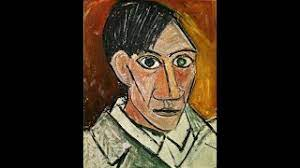

La Guernica

El Guernica es un óleo sobre lienzo de lino y yute, de 776,6 cm de largo y 349,3 cm de alto. A pesar de su título, y de las circunstancias en que fue realizado, no hay en él ninguna referencia concreta al bombardeo de Guernica ni a la guerra civil española. No es, por lo tanto, un cuadro narrativo, sino simbólico.
La mujer que llora

Picasso intenta jugar con las emociones de la persona que está al otro lado o que es ajena a los avatares causados por la Guerra Civil y la inminente Segunda Guerra Mundial debido a la escalada de tensiones entre países como Alemania, Francia, Reino Unido y Checoslovaquia.
Las señoritas de avignon

“Las señoritas de Avignon” es en realidad “Las señoritas de la calle de Avinyó”, una calle de Barcelona donde abundaban los burdeles. Picasso nos muestra en esta obra a cinco prostitutas barcelonesas y lo hace de un modo inédito hasta entonces: lo hace al estilo cubista.
El Viejo Guitarrista Ciego

El viejo guitarrista ciego es un cuadro realizado por el pintor cubista malagueño Pablo Picasso. Este cuadro fue pintado en 1903 mediante la técnica de óleo sobre lienzo, y sus medidas son de 121cm de alto x 92cm de ancho. En la actualidad se encuentra en el Instituto de Arte de Chicago, Estados Unidos.
Niño Con Paloma

Cuadro "Niño con Paloma", pintado por Pablo Picasso, la obra muestra a un infante sujetando un pichón con ternura, destacan las tonalidades pastel empleadas por el artista y el estilo próximo a la escuela francesa de los trazos.
Autoretrato

Este autorretrato representa la fase de transición, en la cual es patente el carácter poco naturalista de los rasgos faciales, como la desproporcionada nariz y los ojos, que fueron descritos por Rousseau, el Aduanero, como semejantes a los de una máscara tribal.
El Sueño

La figura yace dormida, con los brazos doblados y la cabeza inclinada a un lado; los senos, símbolo femenino, son puestos en evidencia en su redondez y exuberancia. El perfil del rostro está dibujado por una única línea que une frente y nariz, bajo la cual se ven los labios carnosos y entreabiertos.
La Vida

La Vie (La Vida) fue pintada en Barcelona en mayo de 1903. Mide 196.5 x 129.2 cm y retrata a dos pares de personas, una pareja desnuda enfrente de una madre con un bebé en sus brazos..
Fuente de información